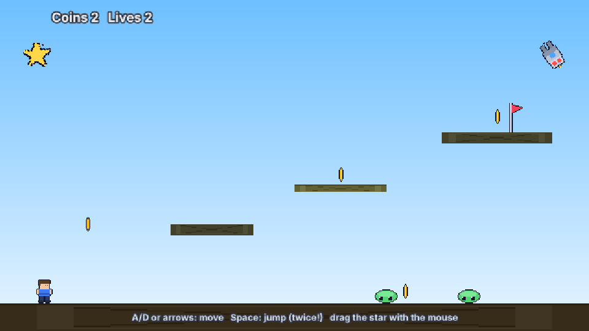

Event sheets
An event sheet is a list of events. Each event says "when these conditions are true, do these actions". It is the same idea as Construct 3's event sheets, and it sits beside JavaScript scripting — a scene can use scripts, an event sheet, or both.

event-sheets example. Every rule in it — coins, hurt, turret bullets, winning — is an event. There is not one script.Use it#
- Open the Event sheets tab and build your events there. It saves
events/main.events.json, a plain JSON file you can also edit by hand. - Point the scene at it:
"settings": { "eventSheet": "events/main.events.json" }in the.scene.json. - Press play. Nothing else is needed — scenes without that setting are unchanged.
{ "format": 1, "name": "main", "events": [
{ "type": "variable", "name": "coins", "valueType": "number", "value": 0 },
{ "type": "event",
"conditions": [ { "object": "Hero", "id": "is-overlapping", "params": { "object": "Coin" } } ],
"actions": [
{ "object": "System", "id": "add-to-var", "params": { "variable": "coins", "value": "1" } },
{ "object": "Coin", "id": "destroy" } ] }
] }Parameters, highlight and help#
Click a condition or action to edit its parameters in the PARAMETERS panel under the sheet: each row has a widget that fits the value (a colour picker for #rrggbb, a checkbox for true/false, a number drag for numbers, a text box with autocomplete otherwise). While the game plays, events that ran in the last moments get a green frame (exact for sheets without include blocks). Hover a condition or action and press F1 to open its section of the event reference.
Objects and picking#
An object type is an entity's name (Coin) or tag (enemy) — or a family listed in scene.settings.families. Event conditions pick instances:
Hero is-overlapping Coinkeeps only the coins that touch the hero.- Actions then run only on the picked instances, and so do the sub-events inside the event.
- Without any condition on an object, an action hits all its instances.
This is Construct's selected-object list (SOL). Pick helpers: pick-all, pick-nth-instance, pick-random-instance, pick-by-comparison, pick-by-evaluate, for-each.
Event flavours#
| What | How |
|---|---|
| Normal event | all conditions must pass |
| Or-block | "block": "or" — any condition passes |
| Inverted condition | "inverted": true |
| Else | first condition System → else; runs when the previous event in the chain did not |
| Sub-events | "children": [ … ] inherit the pick |
| Group | { "type": "group", "title": "Danger", "active": true, "children": [ … ] }; switch with Set group active |
| Disabled | "disabled": true |
| Trigger | a first condition marked trigger only runs when it fires, not every tick |
| Trigger once | System → trigger-once-while-true — true on the first tick only |
Triggers: On start / end of layout, On key pressed / released, On action pressed (project input actions), On click, On created, On destroyed, On collision with, plus behavior triggers such as Platform → On jump.
Timing: every-x-seconds, the wait action (pauses the rest of that event, keeping your picks), and create-object (the created instance is picked for the next actions).
Loops#
for-each, repeat, for (with a name, read it back with loopindex("i")) and while run the rest of the event once per iteration.
Variables#
{ "type": "variable", … } at the top = global. Inside an event's children = local (a fresh copy each run, or isStatic to keep it). isConstant makes it read-only. Entities have instance variables: "vars": { "hp": 3 } in the scene JSON, read as Enemy.hp.
Functions and includes#
{ "type": "function-block", "name": "AddScore", "params": [{ "name": "n", "initialValue": 1 }], "returnType": "number",
"actions": [ { "object": "Functions", "id": "set-return-value", "params": { "value": "Function.Param(0) * 10" } } ] }Call with the Functions → call action or in an expression: Functions.AddScore(5). { "type": "include", "path": "events/common.events.json" } splices another sheet in.
Expressions#
Everything in a parameter is an expression: + - * / % ^, = != < <= > >=, & (join text), && || !, a ? b : c, numbers and "text". Read values with coins, Hero.X, Enemy.Count, Enemy(2).Y, Hero.Platform.VectorY and built-ins such as floor, sqrt, sin (degrees), random(a, b), choose(…), distance(x1,y1,x2,y2), len, left, mid, zeropad, plus dt, time, tickcount, loopindex. There is no eval; expressions are parsed safely.
Containers, families, Persist#
scene.settings.families: { "Hostile": ["Orc", "Goblin"] }— one name matching several types.scene.settings.containers: [["Tank", "Turret"]]— creating a Tank also creates its Turret, and destroying either removes both.- Add the Persist behavior to an entity to keep it when the scene changes.
Mix with scripts#
Scripts still work exactly as before. From a script you can fire sheet triggers or read variables: this.scene.eventSheet.getVar('coins'), eventSheet.fire('Object.on-created', { entity }).
The complete list of conditions, actions and expressions is the generated Event sheet reference. Build a whole game step by step in T24 A platformer from events.